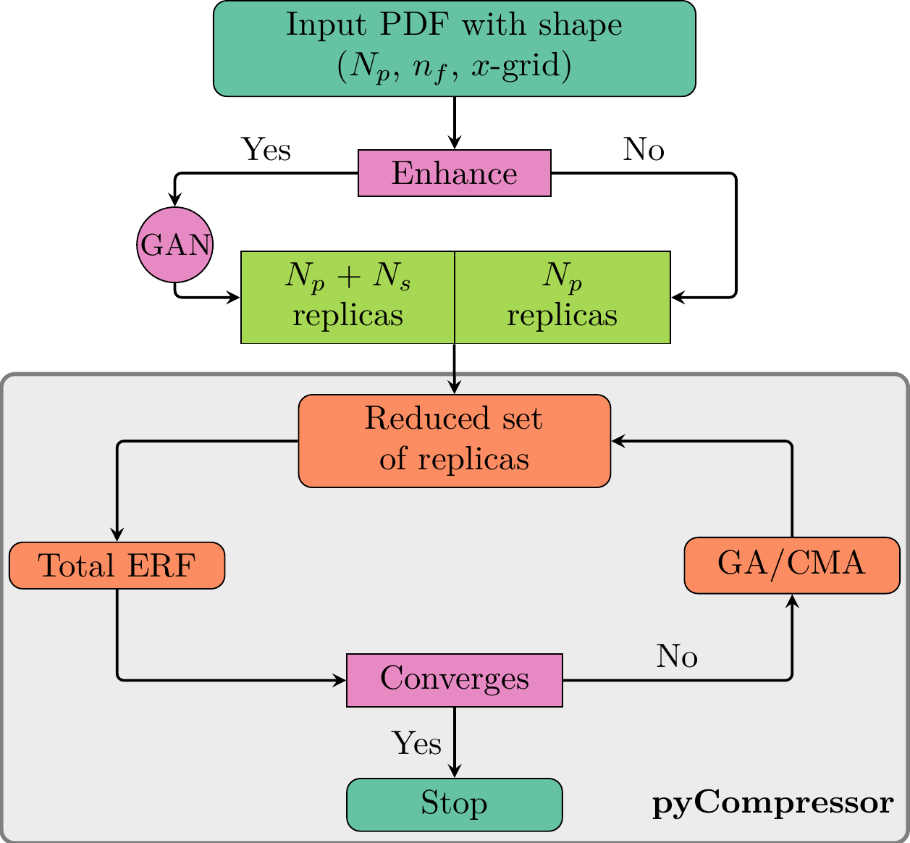

The pyCompressor package was designed in order to have a compression code that is flexible enough to
include various features that might improve the efficiency of the PDF compression strategy. The two new
main features of the pyCompressor package compared to the C++ implementation are:
A new minimization algoirthm, Covariance Matrix Adapation Strategy (CMA-ES). In addition to the
Genetic Algorithm (GA), there is now the possibility to choose as a minimizer the CMA-ES.
A Generative Adversarial (GANs) Strategy that can be used to enhance the statistices of the prior.
This relies on another python package called ganpdfs which is a standalone code based on tensorflow
designed specifically to learn the probability distribution of the a prior dataset (PDF replicas) and
generate new ones that follow the same distribution.
The new desing flow of the pyCompressor package is schematically described in the following diagram.

The prior Monte Carlo set of replica of size \(N_p\) is given as input from which a PDF grid of shape
\((N_p, n_f, x_g)\) (where \(n_f\) and \(x_g\) resp. denote the total number of flavors and the size of
the \(x\)-grid) is computed. If the choice to enhance the statistics is activated, the prior PDF set goes through
the GANs. This will generate a new (enhanced) Monte Carlo PDF set
\(N_e\) (with \(N_e=Np+N_s\) where N_s represents the size of the generated replicas). A subset sample
of the PDF replicas (prior or ehancend) with size \(N_c\) is then extracted in order to compute the Error Function
(ERF). The minimization of the ERF is then performed either using the GA or the CMA which can be defined in the input
runcard. The minimizer basically tries to find a candidate sample that leads to the smallest value of ERF. Once a
convergence is achieved after a given iteration, the agorithm stops and outputs a compressed Monte Carlo set of PDF
replicas with size \(N_c\) (with \(N_c \ll N_p < N_e\)).
The following benchmarks agains the C++ code is done without enhancing the statistics of the prior (i.e. truning
off the GANs). The input PDF set chosen here is the NNPDF31_nnlo_as_0118_1000 with 1000 replicas. The mahine used
for testing is a Ryzen 5 2600 (12 threads) with 16 GB of RAM.